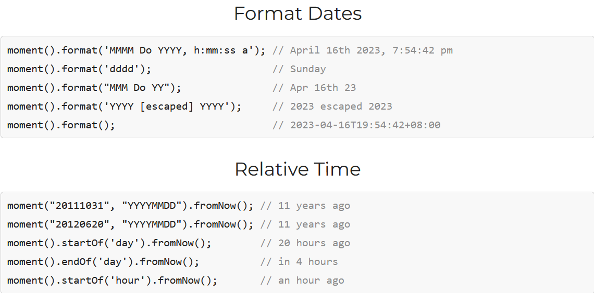
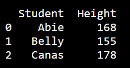

Python vs JavaScript: Library Usage
Last edit: April 17, 2023 By Sannie Cheung

JavaScript and Python support the library function, which is the pre-written Python/ JavaScript code collection. Python libraries are used to perform specific tasks or solve specific problems. Conversely, JavaScript libraries add functionality or effects to a web page. In this section, we would like to introduce the libraries in Python and JavaScript.
JavaScript Libraries
JavaScript has a vast collection of libraries for client-side scripting and server-side development. These libraries can be readily installed and imported using package managers like npm. Utilizing the Javascript library function would help you implement standard functionality you're your web instantly. Here are some popular JavaScript libraries you may hear of:
- React
- jQuery
- Moment.js
React is a popular front-end JavaScript framework that automatically updates the DOM whenever your data
changes.
The key to React's power is composable components. You build encapsulated components once and reuse them
throughout your application. For example, you might create an EmojiSearch component for search
functionality, a Comment component for comments, and Auth component for authentication. Then compose them
together to build the page you want.
Emoji Search
For adding some interactivity to your pages, jQuery is fun. It has shortcuts for animations, getting external data, event responses, and updating HTML, CSS, and JavaScript elements - all in simple lines of code. Try this:
 Dates are tricky, so Moment.js was a lifesaver. It helps format dates in any locale, handle timezones and daylight savings, give relative dates like "tomorrow", and convert between calendars. Extra plugins provide internationalization, time differences, duration, and holiday functionality. Finally, a dating tool that works! No more searching documentation to figure out which method does what. Moment hides date complexity so you can focus on building impressive web apps.
Python Libraries
Pythonprovides many libraries for scientific computing, data analysis, machine learning, and web
development.
Unlike JavaScript, these libraries are required to download through Python's package manager, pip. After that,
they can be easily used in your code by import the library.
Here are some popular libraries you hear of:
- NumPy
- Pandas
NumPy is great for working with multi-dimensional arrays and matrices. It is essential for engineering and science domains. Fast array operations and integration of C/C++ or Fortran code are performed efficiently.
Pandas simplified working with tabular data. It is perfect for analyzing and manipulating data tables. CSV files could be loaded into data frames. Selected columns, stats computed row-wise or column-wise, grouping data, pivoted and merged datasets effortlessly by using Pandas. Example:
import pandas as pd
data = {
"Student": ["Abie", "Belly", "Canas"],
"Height": [168, 155, 178]
}
#load data into a DataFrame object:
df = pd.DataFrame(data)
print(df)
Result:
Random
The random library is great for generating random numbers and shuffling sequences. You can use
random.randint() to get a random integer in a specified range, random.random()
to get a float between 0
and 1, and random.shuffle() to randomly shuffle the elements of a list.
import random
//generate random choice from the list
coin = random.choice(["heads", "tails"])
print(coin)
//generate random interger between 1-10
number = random.randint(1, 10)
print(number)